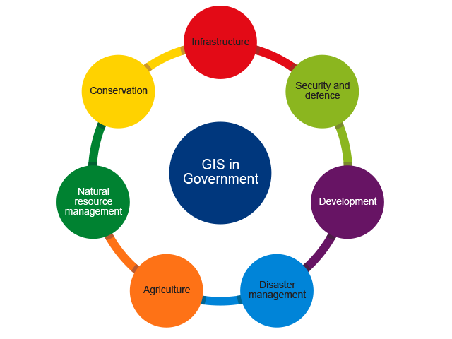

Application of GIS in government
GIS has many applications in government:

Mindmap GIS in government
- Infrastructure
- Asset and facilities planning and management for
- power lines
- railways
- roads
- pipelines
- Security and defence
- assessing risks
- battle planning and simulation
- operations control
- Disaster management
- risk assessment
- disaster response
- planning evacuations
- directing relief
- tracking victims
- Development
- Planning
- integrated development planning – every municipality has to have an integrated development plan (IDP)
- approvals
- environmental impact assessments
- Agriculture
- planning and monitoring crops
- precision agriculture
- fisheries and forestry management
- Natural resource management
- managing mineral resource exploration and exploitation
- water resource monitoring and management
- Conservation
- mapping and managing protected areas and biodiversity